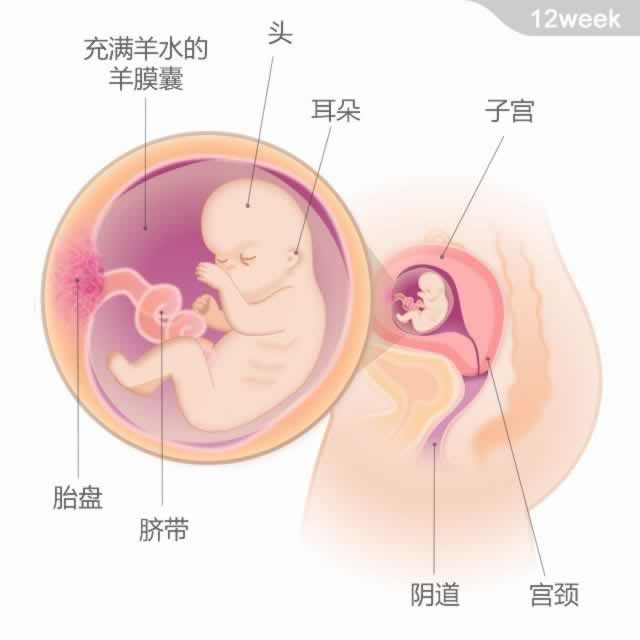

胎儿有一只油桃大小，重约13~20克；从头部到臀部的长度为65~78毫米
胎儿有一只油桃大小，重约13~20克；从头部到臀部的长度为65~78毫米
本周，宝宝的面部特征更加明显了，从三维超声波扫描看，他好像一个微雕的小人儿，眼睑仍然紧紧地闭着。神奇的是，此时的宝宝已经有了自己的指纹。他的脖子可以支撑头部运动，他还可以通过皮肤的振动感受到声音。
此时，宝宝的条件反射能力加强，手掌可以握紧，脚趾也可以弯曲。在准妈妈用手指碰肚子时，他会很淘气地在子宫里蠕动，但因为动作非常轻微，所以你暂时还感觉不到。